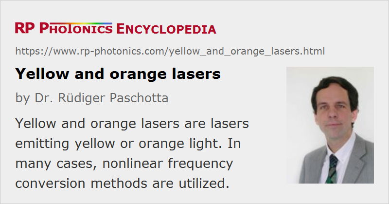

Yellow and Orange Lasers
Definition: lasers emitting yellow or orange light
More general term: visible lasers
German: gelbe und orange Laser
How to cite the article; suggest additional literature
Author: Dr. Rüdiger Paschotta
This article discusses laser sources emitting in the yellow to orange spectral region, i.e. with a wavelength roughly around 570–625 nm. This spectral region is relatively difficult to access, at least when high output power, beam quality and power efficiency are required. Nevertheless, various types of yellow and orange laser sources exist:
- InGaP-based laser diodes may emit orange light e.g. around 610 nm [1]. The shorter the wavelength, the more difficult it is to obtain a good power efficiency and long lifetime.
- Praseodymium/ytterbium-doped upconversion lasers, e.g. based on fluoride fibers, can emit orange light with wavelengths around 605 nm [2].
- Dye lasers can cover the whole yellow–orange spectral region.
- Helium–neon lasers can utilize an orange laser transitions at 612 nm and 594.1 nm.
- Copper vapor lasers can emit pulses of yellow light at 578 nm [5].
- There are various types of frequency-doubled lasers, where the actual laser emits in the 1.1–1.2-μm spectral region and a frequency doubler converts this radiation into orange or yellow light. For example, a Cr4+:MgSiO4 (forsterite) laser can cover this spectral range [3]. There are also optically pumped semiconductor lasers (VECSELs) based on GaInNAs or InGaAs quantum wells, which can generate orange or yellow light via intracavity frequency doubling [7, 8].
- Some yellow or orange laser sources are based on sum frequency generation. For example, mixing the outputs of two Nd:YVO4 lasers emitting at 1064 nm and 1342 nm, respectively, results in orange light with 593.5 nm. There are even laser pointers containing such a source, but these are fairly expensive.
- Optical parametric oscillators may emit orange or yellow light, when pumped with a blue laser.
- There are Raman lasers, often based on Raman-active bulk crystals (e.g. tungstate crystals), which can either generate orange or yellow light from green pump light [4], or generate light with wavelengths around 1.1–1.2 μm with a 1-μm pump source [6], so that subsequent frequency doubling or sum frequency generation leads to orange or yellow light.
Orange and yellow laser sources are applied e.g. for laser guide stars (sodium laser beacons) and in medical laser therapies (e.g. photocoagulation in ophthalmology). Orange or even yellow laser pointers are not common.
Suppliers
The RP Photonics Buyer's Guide contains 37 suppliers for yellow and orange lasers. Among them:
Questions and Comments from Users
Here you can submit questions and comments. As far as they get accepted by the author, they will appear above this paragraph together with the author’s answer. The author will decide on acceptance based on certain criteria. Essentially, the issue must be of sufficiently broad interest.
Please do not enter personal data here; we would otherwise delete it soon. (See also our privacy declaration.) If you wish to receive personal feedback or consultancy from the author, please contact him e.g. via e-mail.
By submitting the information, you give your consent to the potential publication of your inputs on our website according to our rules. (If you later retract your consent, we will delete those inputs.) As your inputs are first reviewed by the author, they may be published with some delay.
Bibliography
| [1] | C. J. Nuese et al., “Orange laser emission and bright electroluminescence from In1−xGaxP vapor-grown p–n junctions”, Appl. Phys. Lett. 20, 431 (1972), doi:10.1063/1.1654004 |
| [2] | P. Xie and T. R. Gosnell, “Room-temperature upconversion fiber laser tunable in the red, orange, green, and blue spectral regions”, Opt. Lett. 20 (9), 1014 (1995), doi:10.1364/OL.20.001014 |
| [3] | A. Sennaroglu, “Broadly tunable continuous-wave orange-red source based on intracavity-doubled Cr4+:forsterite laser”, Appl. Opt. 41 (21), 4356 (2002), doi:10.1364/AO.41.004356 |
| [4] | R. P. Mildren et al., “Efficient, all-solid-state, Raman laser in the yellow, orange and red”, Opt. Express 12 (5), 785 (2004), doi:10.1364/OPEX.12.000785 |
| [5] | E. Le Guyadec et al., “A large volume copper vapor +HCl-H2 laser with a high average power”, IEEE J. Quantum Electron. 41 (6), 879 (2005), doi:10.1109/JQE.2005.846686 |
| [6] | R. P. Mildren et al., “Discretely tunable, all-solid-state laser in the green, yellow and red”, Opt. Lett. 30 (12), 1500 (2005), doi:10.1364/OL.30.001500 |
| [7] | J. Rautiainen et al., “2.7 W tunable orange-red GaInNAs semiconductor disk laser”, Opt. Express 15 (26), 18345 (2007), doi:10.1364/OE.15.018345 |
| [8] | M. Fallahi et al., “5-W yellow laser by intracavity frequency doubling of high-power vertical-external-cavity surface-emitting laser”, IEEE Photon. Technol. Lett. 20 (20), 1700 (2008), doi:10.1109/LPT.2008.2003413 |
| [9] | Z. Liu et al., “Self-frequency-doubled KTiOAsO4 Raman laser emitting at 573 nm”, Opt. Lett. 34 (14), 2183 (2009), doi:10.1364/OL.34.002183 |
| [10] | H. Zhu et al., “Yellow-light generation of 5.7 W by intracavity doubling self-Raman laser of YVO4/Nd:YVO4 composite”, Opt. Lett. 34 (18), 2763 (2009), doi:10.1364/OL.34.002763 |
| [11] | L. R. Taylor et al., “50 W CW visible laser source at 589 nm obtained via frequency doubling of three coherently combined narrow-band Raman fibre amplifiers”, Opt. Express 18 (8), 8540 (2010), doi:10.1364/OE.18.008540 |
| [12] | Z. Cong et al., “Theoretical and experimental study on the Nd:YAG/BaWO4/KTP yellow laser generating 8.3 W output power”, Opt. Express 18 (12), 12111 (2010), doi:10.1364/OE.18.012111 |
| [13] | J. Rautiainen et al., “2.5 W orange power by frequency conversion from a dual-gain quantum-dot disk laser”, Opt. Lett. 35 (12), 1935 (2010), doi:10.1364/OL.35.001935 |
| [14] | D. Pabœuf et al., “Diode-pumped Pr:BaY2F8 continuous-wave orange laser”, Opt. Lett. 36 (2), 280 (2011), doi:10.1364/OL.36.000280 |
| [15] | E. Kantola et al., “High-efficiency 20 W yellow VECSEL”, Opt. Express 22 (6), 6372 (2014), doi:10.1364/OE.22.006372 |
| [16] | B. Ernstberger et al., “Robust remote-pumping sodium laser for advanced LIDAR and guide star applications”, Proc. SPIE, 9641, 96410F (2015), doi:10.1117/12.2194874 |
| [17] | R. Bege et al., “Watt-level second-harmonic generation at 589 nm with a PPMgO:LN ridge waveguide crystal pumped by a DBR tapered diode laser”, Opt. Lett. 41 (7), 1530 (2016), doi:10.1364/OL.41.001530 |
See also: red lasers, green lasers, blue lasers, visible lasers
and other articles in the category lasers
|  |
If you like this page, please share the link with your friends and colleagues, e.g. via social media: 


These sharing buttons are implemented in a privacy-friendly way! |
2020-03-15
I saw a yellow beam of light as large as a soccer ball coming from a window from the house across the street where i live. What could be happening there?
Answer from the author:
There are orange and yellow laser pointers, although they are not common. So I guess someone played around with such a device. Maybe the beam looked large due to the glare.